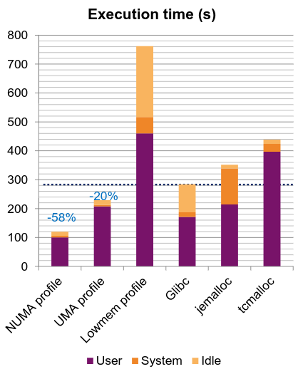
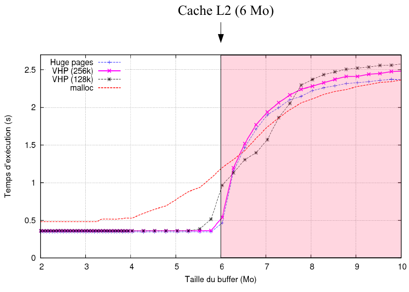

IOCatcher
2020-2021
IOCatcher RDMA server developped for the
SAGE2
H2020 European project. It acts as an NVDIMM burst buffer between ummap-io-v2 and the
Seagate Motr object storage. It is based on libfabric
to support TCP and VERBS protocols.
Ummap-io-v2
2020
Ummap-io-v2 is a second implementation of the
original ummap-io from Sergia Rivas-Gomez (KTH) made for the
SAGE2 H2020
European project. The goal is to provide a memory abstation to perform IO on a remote NVDIMM memory exposed via the
IOCatcher RDMA server acting as an NVDIMM burst buffer
between ummap-io and the Seagate Motr object storage. The extra idea behind ummap-io is to explore the memory mapping
as the core API to make IO with a common semantic between various kind of storage. The second version 2 I reimplemented
introduce:
- Support an URI system permitting to target various kind of IO target just by changind a simple string without impacting
the application implementation.
- It offers a more flexible handling of the memory consumption if the memory mapped segment which can be seen as the OS
swaping system but fully controled in user space.
- The version 2 is thread safe compared to the version 1 which is not.
- It as a clean driver abstraction.
- Add an improved semantic to handle checkpoints if the remote storage support a copy on write semantic (ioatcher, xfs).
- It is fully unit tested.
Links:
MemTT
2018
I developped MALT and NumaProf during my both post-docs as research projects and decided
to make them nicely availble in the same github group with nice website to motivate peoples to use the tools and maybe (I hope)
contribute. I like to make beautifull things, this is my artistic part, hope you will enjoy.
NumaProf
2017
Mostly all current servers are NUMA (Non-Uniform Memory Access) architecture, meaning that each CPU has its own memory and access to a remote memory are slower. It is also now true inside the CPU itself for example when looking at the Intel KNL.
I showed during my PhD. that making the wrong choice on memory allocation can severely degrade the performance of an application.
Considering this context, developers need to explicitly take care of NUMA inside their code for example while using threads. Problem, today there is no tool to guide the developer and pinpoint mistakes.
NUMAPROF aimed at filling this gap. It instrument the binary via pintool and intercept all memory accesses to check if they are remote of local or unpinned. It then reports those metrics onto the source code to give the numbers on each line.
In order to help the developer to track his allocated segments, NUMAPROF also report the local, remote accesses onto the allocation site.
NUMAPOF take back the same approach as MALT with a web GUI and source annotations.
We showed the capability to gain a factor 3 in performance on an OpenMP application (which was not known before) on KNL in 45 minutes of work with the tool.
Links:
LHCb DAQPIPE
2015 - now
In particle physics, all the current big detectors rely on hardware filters to reduce the amount of data to read in their data acquisition system. This leads to large physics uncertainties in the measurement and is hard to maintain as commonly based on FPGAs.
In 2020 the LHCb detector will be upgraded. For this upgrade, it has been decided to remove the hardware trigger and read in real time all the data produced by the detector. This leads to the requirement of transporting 40 Tb/s.
For my postdoc I joined the Online team of LHCb to work in collaboration with Intel on benchmarks to evaluate the feasibility of the approach by using high-speed fabrics coming from the HPC field : Mellanox InfiniBand and Intel Omni-Path. In order to make this evaluation we built DAQPIPE which runs the event building scenario and to be tested at scale.
The final system will consist of 500 readout nodes using a homemade acquisition card running at up to 100 Gb/s. We then send the data to 500 event building node to aggregate the fragments coming from the 500 readout nodes. In order to reduce costs, we run the readout and event building on the same group of hosts, meaning that each node will need to send and receive at full speed (estimate 80 Gb/s with margins).
The communication pattern is from the MPI point of view a continuous all-to-all pattern. Hence we look on full fat trees. But notice that it is stressing for the hardware. One can find some theoretical papers on all-to-all communications on fat trees like the one from IBM: Bandwidth-optimal all-to-all exchanges in fat tree networks. Effectively we confirmed some of the remarks of this paper but encounter several practical issues while running on real systems.
One of our major issue is related to the cabling and routing tables. On tested machines, some were prototypes so the cabling was not "clean", meaning there were some missing nodes in switches and nodes were not cleanly ordered. We showed it severely reduce our bandwidth. In addition, even on a clean cluster, we showed that the routing table can impact us if it does not provide a symmetrical pattern between all the leaf switches.
Our current best result is 83 Gb/s on 64 nodes. We also made one test at scale on 512 nodes, but we discovered that the routing tables of this machine was not adequate for our test. The results obtained at this scale is 35 Gb/s so a factor 2.3 too low. This project is still ongoing and we hope progress on the routing tables issues.
Last news before leaving CERN showed it should work by considering some sub-detectors will send less (~60 Gb/s) than some others (~90 Gbs/), top estimation with of course margins. In this case, the asycnhone
implementation I made automatically adapt and balance the bandwidth and permit to well handle on IB/EDR the sub-detected chalanging us with 90 Gb/s (on harware network witch has physical limit to 96 Gb/s !). This is opposed to some other tries
we made with synchrone implementation which fail to handle this case and requires tera-bytes of buffer memory to cope with the input stream. I Still hope IB/HDR (200 Gb/s) will be there before buying the servers and switches to have more margins to better sleep.
Links:
Cartesian Mesh Runtime
2013-2014
This project started as a simple numerical simulation developed for a lab for students. I wanted to implement the Lattice Boltzmann Method to simulate the Karman street vortices. But, to make this implementation I was forced to cross 2 report, 1 these and 2 existing implementation in matlab and C. The main issues come from the two points :
- Reports and PhD. theses provide details on how to obtain the equations of the model. But, they never say clearly what is the final equation to put in the code with all the constants. This is why it is required to cross many documents to get it.
- The source code from physicists are most of the time unreadable because they use variables like 'a', 'b', 'cc' which are meaningless and most of the time provides no documentation or comments of their code.

A second issue relates to the choice of the memory layout which is a major criterion today. Most of the time we decide a layout while starting the project then all the code is glued to it. If we want to change the layout, we have to modify mostly all the codes which is so painful that we cannot explore various solutions to find the best one.
In order to solve those issues, I proposed to provide a DSL. It permits to generate the code so we can select a memory layout by the configuration and test it. I also chose to base this DSL on latex. This way all the variables have two names, the latex name which is meaningful for the physicist and a computing name (long name) which is more meaningful for the computer scientist. Also remark that it is easier to check long equations with multiple levels in rendered latex than in C.
The idea is to generate two things from the DSL. First we generate the source code to run in parallel with a supercomputer and to explore memory layouts. Second we generate a nice report clearly describing the equations of each step and the constants. The main idea is once we know the good performance choice by testing them we can take a computer scientist to make a more efficient implementation, the DSL serving as a bridge to communicate between the two specialists.
Of course it is a DSL so it targets only stencil base simulations. The current implementation successfully generates the code for the LBM simulation on OpenMP and get the same performance as the manual C implementation (even better due to a choice which was not explored in the C implementation).
Links:
MALT, MALloc Tracker
2014
In 2014 I stared a postdoc at the Exascale Computing Research Lab at Versailles. The purpose of this post-doc was to implement a memory profiler targeting the three main questions:
- My application consumes too much memory, where it is allocated ?
- My application is slow down by memory management where are the issues (short life allocations, reallocation pattern...)
- I have bad allocation patterns, where are they ? (Too small allocations, mix of short and long life blocks...)
The main idea guiding this tool was the couple valgrind (callgrind/cachegring) and the GUI kcachegrind. I wanted to get the same approach by providing annotation of the call tree and source code with the memory metrics. MALT also provides a view of some metrics over time. Also MALT uses a special GUI based on web technology.
During the development we were able to observe really interesting and unexpected patterns in the tested application showing that we can provide some interesting hints with this approach.
Links :
Process Local Page Cache
2011-2013
While studying my memory allocator for MPC we observed that operating system costs can be huge due to the first touch mechanism. Hence, we tried to keep the memory inside the allocator limiting the exchanged with the operating system. This was working but lead to larger memory consumption and loss of NUMA management granularity.
In this third topic of my PhD. we studied the source of the performance issue inside the Linux kernel. It appears that the major costs on first touch page faults come from the memory clearing required for security reasons. For standard 4 KB pages this represents 40% of the cost but for huge pages (2 MB) it represents 95%.
I proposed to apply the same caching approach as our memory allocator but by implementing this cache inside the kernel and attached it to the process structure. Now the memory pages come from the local process so we don't need anymore to clear its content. This must be explicitly asked not to break compatibility but this can easily be done in the memory allocator. Notice that the operating system can now requisition the memory from this cache opposite to what we did in the memory allocator.
Thanks to this new approach we were able to see a speed up by a factor 60 on huge pages.
On a small NUMA system it shows the same performance as the best tuning with our memory allocator but by not keeping the memory in users space anymore.
Links :
Student master course project, parallel MPI/OpenMPI optimization - LBM
2010, 2011, 2012, 2014
This muti-practical sessions where about training students to discover and tune a "real" application (2000 lines) they cannot understand in one second just by reading code. The goal is to get a non
optimized MPI simulation and make the work with tools.

I mainly tried to run students codes myself on large scale cupercomputer up to 512 cores to give them nice feedback to learn scaling issues.
My tuned version of this code in MPI+OpenMP with more optimization that what is listed here has run and nicely scaled up to 2000 cores on the Curie supercomputer also at lower scale in a MPI+OpenMP+CUDA mode.
You can find in this report (in french sorry, need to take time to translate one day) all the optimization steps if you want to learn way to proceed.


DISLAMER: before reading and applying blindly those steps, do not forget optimizing is first to think about your requirements and way to adequatly match them to your hardware. There is no magic rules to apply in any case without thinking and checking. Do not forget hardware evolves and way to optimize too and can be 180° compared to old ways.
MPC memory allocator
2011-2013
During my PhD. I worked into the MPC (Multi-Processor Computing) project at CEA. This project aimed at providing a thread base MPI implementation. In order to efficiently run on NUMA nodes, I implemented a parallel memory allocator to match the topology of the machine.
This allocator addressed two issues. First we noticed that some big numerical simulations written in C++ were largely (around 50% of the total runtime) impacted by the cost of the first touch page faults. This is even more true when using jemalloc (the allocator from FreeBSD) which tend to aggressively return the memory to the operating system to keep low memory consumption. In order to avoid this cost, I implemented a cache inside the memory allocator for large memory segments in addition to what is currently done for small segments in common allocators. This was a little bit like what append in tcmalloc, the allocator from Google.
Caching the memory inside the allocator means that it becomes responsible of the NUMA mapping of memory. There is not such support on TCMalloc.
I also made the implementation such that there is a minimal lock with minimal contention to make the allocator mostly lock free.

Implementing all these supports showed large performance gains with up to a factor 2 on a big NUMA machine with 16 nodes and 2 NUMA levels on a real application of multiple million lines of code.
The last work in this allocator was to enable management of custom memory segment. This can be useful to manage allocations in a shared segment or to extend the allocator to support new HBM memory on Xeon Phi. The interesting thing with this approach is such we can wrap a function using standard calls to malloc/free and capture all the allocations into our custom memory segment.
Links :
Operating system, cache, memory allocator interactions
2011-2013
During my master internship we observed some strange behavior while playing with a combination of operating systems and memory allocators. We mostly observed that one of our numerical simulations was running 3 times slower on FreeBSD than on Linux which was the opposite than what we expected due to the support of huge pages. The performance on FreeBSD can be improved by using another memory allocator which means there is an unknown interaction between the OS, the memory allocator and the caches for this application.
I started my PhD. by studying this behavior mostly by looking at the interaction of all 4 components. We showed that the issue comes from too large alignment of the allocated memory by the FreeBSD memory allocator which badly interfere with the huge pages on the CPU caches if the application uses too many arrays in for loops (more than 8 which is the cache associativity). We showed that on huge pages, the memory allocator needs to not aligned the allocated segments not to fall in this unfavorable issue.
On FreeBSD this was forced by Jemalloc. On OpenSolaris we can observe a similar issue with the page coloring but this time because the OS align all the big requests into the mmap syscall. We built from this some recommendation on the way to implement page coloring to avoid this issue. Luckily Linux does not apply any of those policies so not falling in the trap. Anyway we have to keep track of this issue in case Linux wants to apply the same policy on its transport huge pages. We also showed we can use any number of arrays in for loops if we not aligned the segment showing that enforcing huge alignments is a wrong policy.
Remark that this problem might have disappeared due to the hashing function added in recent Intel processors. To be studied.
During this work we also observed lighter issues due to associativity of the TLB caches but more on a theoretical point of view than effective effects on applications.
Links :
Virtual Huge Pages
2010
This project was done during my master internship at CEA. The goal was to implement support of huge pages into a kernel module. At that time the transparent huge pages were not public and usage of huge pages was painful in the available Linux kernel versions.
The main goal was to improve CPU cache usage. Effectively we can show that large caches start to leak when using 4K pages due to the cache associativity colliding with the random selection of the pages. This can be fixed by using huge pages like FreeBSD or making page coloring like OpenSolaris.

It appeared we cannot implement strict huge pages into a kernel module so we implemented a contiguous page approach and page coloring. It hows that we can fix the cache issue by using pages of 256k instead of the problematic 2 MB size which is too big and add some issues in its management.
As shown on the chart, we succeed in getting the performance on a micro-benchmark, but playing with memory allocators an operating system showed some strange behavior. On FreeBSD (which use native huge pages) one of our numerical simulations was performing slower than on Linux (which does not have huge pages). This is a problem of memory alignments we started to understand during my PhD. following this internship.
Links :